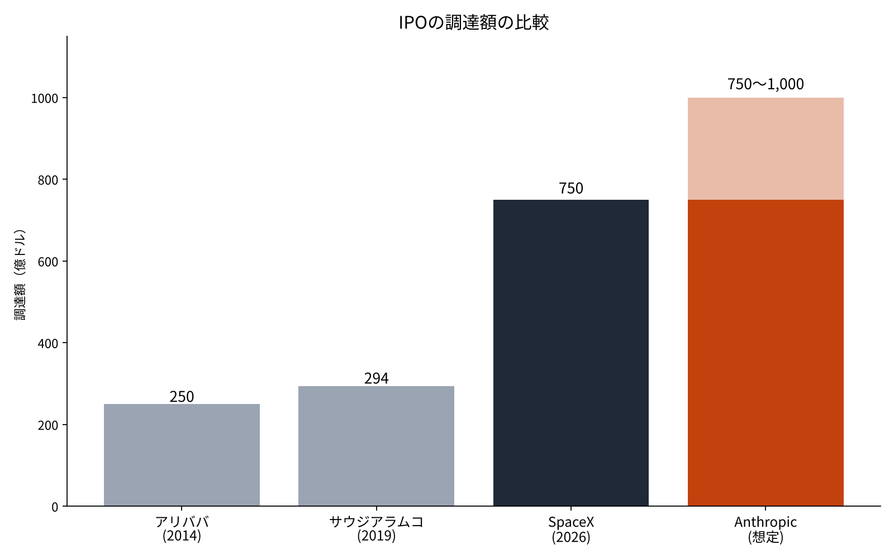
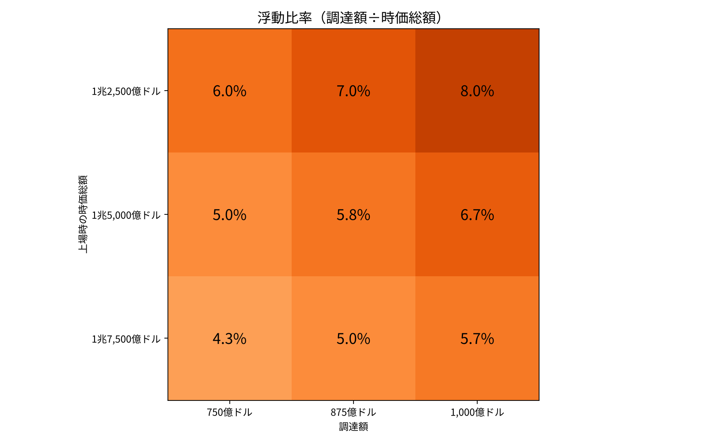
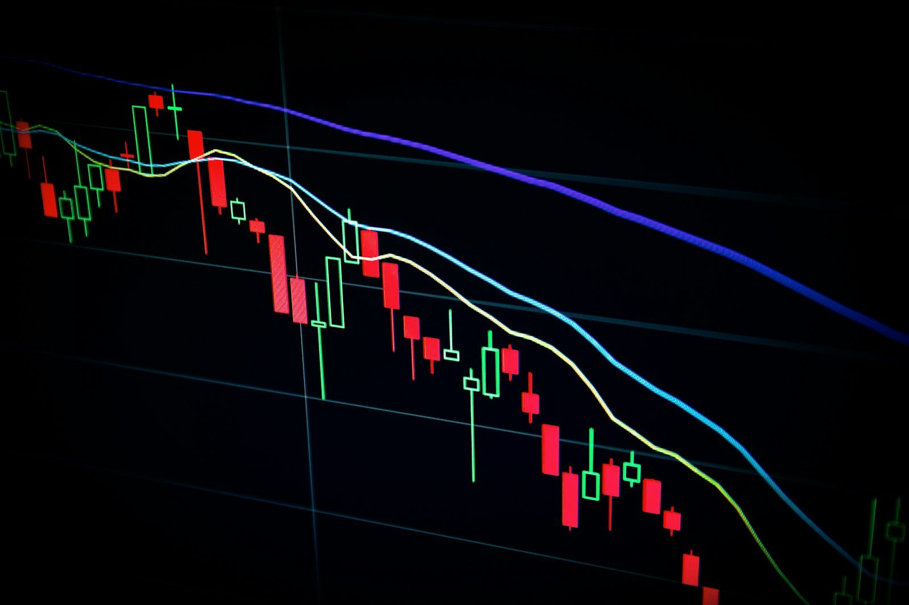

Anthropicの調達750億〜1,000億ドルは史上最大級か――過去の大型IPOの規模と、上場の日に起きてきたこと
Anthropicは10月26日、米証券取引委員会（SEC）に上場の届出書（Form S-1）を公開で提出した[1]。報道では、ロードショーが米国時間の11月10日にも始まり、調達額は750億〜1,000億ドルになる見込みとされる[9]。
6月には、SpaceXが750億ドルを集めて史上最大のIPOになったばかりである[6]。わずか5か月で、同じ規模の上場がもう一度来ることになる。
本稿の問いは、Anthropicの調達額が過去の大型IPOと比べてどれほどの大きさなのか、そして大型IPOの上場の日と、その後に起きてきたことから何が言えるのかである。
- Anthropicの調達額（750億〜1,000億ドル）はSpaceXの750億ドルに並ぶか3割以上上回り、アラムコの2.6〜3.4倍、アリババの3.0〜4.0倍になる。
- 一方で浮動比率は4.3〜8.0%と小さく、PSRは63〜89倍で、売上が今の数倍に伸びることを織り込んだ値付けになる。
- 過去の統計では、10億ドル以上のIPOは初日に平均17.9%上げたが、2012〜2024年の上場企業は3年間で市場を25.5%下回った。

問いと背景
IPO（新規株式公開）とは、未上場の会社が株を初めて市場で売り出し、資金を集めることを指す。調達額は、売り出す株数に公開価格を掛けた額である。引受の証券会社が追加で株を売る権利を「グリーンシュー」と呼び、これを使うと調達額は1割強ふくらむ。
これまでの記録を並べると、2014年のアリババが250億ドル（グリーンシューを含む）、2019年のサウジアラムコが294億ドル（同）だった[3][4][7]。2026年6月のSpaceXは、1株135ドルで5億5,556万株を売り、750億ドルを集めた[6][12]。
ロードショーとは、上場の前に会社と証券会社が機関投資家を回り、買いたい株数と値段の希望を集める期間を指す。集まった需要をもとに、公開価格が決まる。Anthropicの場合、その期間は1週間ほどと見込まれている[5]。
調達額が大きいほど、買い手の数と資金の厚みが要る。上場の日に需要が足りなければ、値は公開価格を割り込む。逆に需要が多すぎれば、初日に大きく上げ、会社は安く売りすぎたことになる。この「初日の値上がり」は学術研究で長く調べられてきた[2]。
本稿では、もう1つの物差しとして「浮動比率」を使う。ここでは、調達額を上場時の時価総額で割った値を指す。会社全体のうち、どれだけの割合が新たに市場へ出てくるかを示す。浮動比率が小さいほど、売り出す株は会社の大きさに比べて少なくなる。
あわせて「PSR（株価売上高倍率）」も使う。時価総額を年間の売上高で割った値で、売上の何年分の値段が付いているかを示す。赤字の会社でも計算できるため、成長企業の値付けを比べるときによく使われる。
データと方法
使う資料は、各社の届出書と目論見書（SEC）、会社の発表、学術的なIPO統計である[1][2][3][4]。Anthropicの調達額は届出の段階で決まっていないため、報道の幅（750億〜1,000億ドル）を前提に置く[5][9]。
時価総額も未定である。報道では1兆2,000億ドルから2兆ドルまでの数字が出ている[10][11]。本稿では、1兆2,500億・1兆5,000億・1兆7,500億ドルの3通りを置く。
Anthropicの売上高は、2026年6月までの12か月で197億ドルだった[5]。この数字を、3通りの時価総額と組み合わせてPSRを出す。
方法は4つの段階に分けた。第一に、調達額を過去の大型IPOと比べる。第二に、浮動比率を調達額と時価総額の組み合わせで計算する。第三に、PSRを時価総額の3通りで計算する。第四に、フロリダ大学のジェイ・リッター教授のIPO統計から、上場の日の値上がり（初値の上昇率）と、その後3年間の成績を確かめる[2]。
結果

調達額で比べると、Anthropicは750億ドルでもSpaceXと並び、1,000億ドルなら3割以上上回る。アラムコの294億ドルと比べると2.6〜3.4倍、アリババの250億ドルとは3.0〜4.0倍になる。
| 案件 | 年 | 調達額（億ドル） | 上場時の時価総額（億ドル） | 浮動比率 |
|---|---|---|---|---|
| アリババ | 2014 | 250 | 1,680 | 14.9% |
| サウジアラムコ | 2019 | 294 | 17,000 | 1.7% |
| SpaceX | 2026 | 750 | 18,000 | 4.2% |
| Anthropic（中央の仮定） | 2026 | 875 | 15,000 | 5.8% |
浮動比率は、アリババの14.9%に対して、アラムコは1.7%、SpaceXは4.2%だった。大型化した最近の2件は、会社のごく一部だけを売り出している。Anthropicも、中央の仮定では5.8%にとどまる。
上場の日の値動きについて、リッター教授の統計では、1980〜2025年の米国のIPOの初値の上昇率は単純平均で19.0%、調達額で重み付けすると7.0%だった[2]。2001〜2025年の調達額10億ドル以上の案件に限ると、平均は17.9%である[2]。SpaceXは上場の日に19%上げた[8]。
上場後の成績は、別の顔を見せる。2012〜2024年に上場した事業会社の3年間の保有収益は7.6%だったが、市場全体と比べると25.5%下回った[2]。上場の日に上げても、その後の3年で市場に負けることが多かった。
PSRは、時価総額1兆5,000億ドルの仮定で76.1倍になる。売上の76年分の値段が付く計算で、1兆2,500億ドルなら63.5倍、1兆7,500億ドルなら88.8倍だった。どの仮定でも、売上が今の何倍にも伸びることを前提にした値段になる。
感度分析

浮動比率を、調達額と時価総額の3通りずつで計算した。最も小さいのは時価総額1兆7,500億ドル・調達額750億ドルの4.3%、最も大きいのは1兆2,500億ドル・1,000億ドルの8.0%である。9通りすべてが、アリババの14.9%を下回り、アラムコの1.7%を上回った。
| 時価総額＼調達額 | 750億ドル | 875億ドル | 1,000億ドル |
|---|---|---|---|
| 1兆2,500億ドル | 6.0% | 7.0% | 8.0% |
| 1兆5,000億ドル | 5.0% | 5.8% | 6.7% |
| 1兆7,500億ドル | 4.3% | 5.0% | 5.7% |
次に、上場の日の値上がりを3通り置いた。0%なら、初日に買い手へ渡る値上がり益はない。調達額で重み付けした平均の7.0%なら、875億ドルの案件で約61億ドル、10億ドル以上の案件の平均17.9%なら約157億ドルになる。値上がりの幅で、初日に動くお金の大きさは2倍以上変わる。
同じ考え方で、上場の後に売上がどれだけ伸びればPSRが今の大型テック株並みに下がるかも見られる。たとえばPSRを30倍まで下げるには、時価総額1兆5,000億ドルのままなら、売上は500億ドルが要る。今の197億ドルの約2.5倍にあたる。

考察
結果から言えるのは、Anthropicの上場は額では史上最大級になるが、会社の大きさに対して売り出す割合は小さいということである。浮動比率が小さいほど、市場に出る株は少なく、需要と供給の釣り合いで値が動きやすい。
一方で、浮動比率が小さいことは、上場後の値を支える方向にも働く。売りに出る株が少なければ、買いたい人が多い間は値が崩れにくい。SpaceXが初日に19%上げたのも、売り出しの割合が4.2%と小さかったことと無関係ではないだろう。
反対の見方もある。調達額がこれだけ大きいと、買い手は手元の資金だけでは足りず、他の株を売って資金を作る。その売りが、上場の前後に他の大型株の重しになるという見方である。この点は、本稿のデータでは確かめられない。SpaceXの上場の前後に他の大型株がどう動いたかを日次で調べれば、ある程度は確かめられるはずで、次の課題として残す。
データの限界も大きい。比べた案件はわずか3件で、上場した国も時代も違う。アラムコは国内の投資家が中心で、時価総額の大半を国が持ち続けた。SpaceXの上場後の成績は、まだ5か月分しかない。リッター教授の統計も米国の上場が中心で、3社のような超大型の案件はほとんど含まれていない。PSRの計算に使った売上も、上場の時点ではすでに半年前の数字になる。
答え合わせの基準は3つ置ける。公開価格が決まったときの時価総額が1兆5,000億ドルを超えるか。浮動比率が5%を下回るか。そして、上場の日の値上がりが17.9%を超えるかである。
結論
Anthropicの調達額は750億ドルでSpaceXと並び、1,000億ドルなら史上最大を3割以上更新する。一方で浮動比率は4.3〜8.0%と小さく、アラムコとSpaceXに近い「一部だけを売る大型IPO」になる。値付けはPSRで63〜89倍と高く、売上が今の数倍に伸びることを織り込んだ水準である。過去の統計では、大型の案件も初日に平均17.9%上げたが、その後の3年間は市場に負けることが多かった。
僕はこう見ている
僕は、Anthropicが上場したら株を買うと決めている。買う時期を上場の日にするか、その後にするかは、まだ決めていない。この数字を見ると、上場の日の熱より、その後の数年を持つ前提で考えたほうがよさそうだ。
気になっているのは、これだけのお金がどこから来るのかである。大口の投資家に加えて、借りて買う人や、他の株を売ってポジションを作る人もいるだろう。保有しているSpaceXは、公開価格135ドルに対して、11月6日時点で134.27ドルだった。上場の日に19%上げた株が、5か月でほぼ公開価格に戻っている。その記録も頭に置いて、上場の日を待ちたい。
出典
- Anthropic, PBC, 「Form S-1 Registration Statement」, 2026-10-26 https://www.sec.gov/Archives/edgar/data/0002130357/000162828026067168/anthropicpbc-sx1.htm
- Jay R. Ritter（University of Florida）, 「Initial Public Offerings: Updated Statistics」, 2026-11-05 https://site.warrington.ufl.edu/ritter/files/IPO-Statistics.pdf
- Alibaba Group Holding Ltd, 「Form 424B4 Prospectus」, 2014-09-19 https://www.sec.gov/Archives/edgar/data/0001577552/000119312514347620/d709111d424b4.htm
- Alibaba Group, 「Alibaba Group Announces Exercise of Underwriters' Option to Purchase Additional ADSs」, 2014 https://www.alibabagroup.com/en-US/document-1490842489823690752
- Renaissance Capital, 「AI model developer Anthropic PBC files for an estimated $75 billion IPO」, 2026-10-26 https://www.renaissancecapital.com/IPO-Center/News/122417/ai-model-developer-anthropic-pbc-files-for-an-estimated-75-billion-ipo
- IPO Scoop, 「SpaceX (SPCX) Raises $75 Billion in Biggest IPO in History」, 2026-06-11 https://www.iposcoop.com/?p=38637
- Gulf News, 「Aramco raises IPO to record $29.4 bln through greenshoe option」, 2020-01-12 https://gulfnews.com/business/aramco-raises-ipo-to-record-294-bln-through-greenshoe-option-1.68959262
- NPR, 「SpaceX IPO makes history as largest ever. Stock gains 19% on first day」, 2026-06-12 https://npr.org/2026/06/12/nx-s1-5855004/stock-ai-spacex-ipo-elon-musk
- TradingKey, 「US stock market: Nasdaq, Dow rise; Anthropic IPO」, 2026-11-09 https://tradingkey.com/analysis/stocks/us-stocks/262297090-us-stock-nasdaq-dow-rise-anthropic-ipo-nvidia-spacex-tesla-tradingkey
- Let's Data Science, 「Anthropic reportedly presses ahead with IPO targeting $1.5 trillion valuation」, 2026 https://letsdatascience.com/news/anthropic-reportedly-presses-ahead-with-ipo-targeting-15-tri-c74a48fb
- FourWeekMBA, 「Investors Discuss $1.2T-$1.3T Anthropic IPO Value After Rout」, 2026 https://fourweekmba.com/ai-investors-discuss-1-2t-1-3t-anthropic-ipo-value-after-rout/
- Space Exploration Technologies Corp., 「Form S-1/A（Amendment No.2）」, 2026 https://sec.gov/Archives/edgar/data/1181412/000162828026040364/spaceexplorationtechnologib.htm
写真：David Vives／Maxim Hopman（Unsplash）。図はYUKI CAPITALが作成
日々の数字と判断は、Xで記録している。